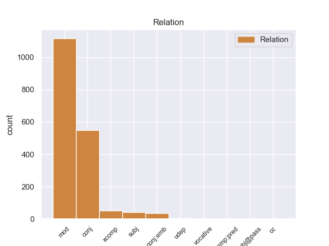
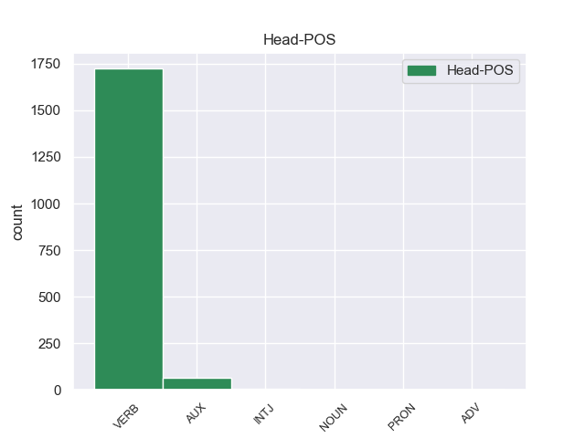
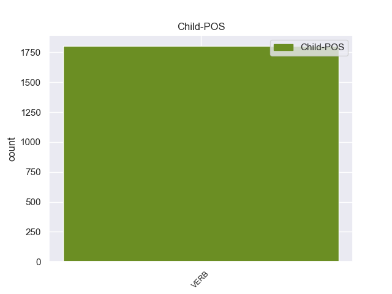

Distribution of features within this leaf



Agreement Rules sorted by frequency.
- When the dependent token is the modifer(mod) of the head token, and the dependent token is VERB.
1 Αυτό _ _ _ _ 0 _ _ _
2 μπορεί μπορεί VERB _ Mood=Ind|Number=Sing|Person=3|Tense=Pres|VerbForm=Fin|Voice=Mid 5 mod _ _
3 να _ _ _ _ 0 _ _ _
4 μην _ _ _ _ 0 _ _ _
5 οδηγήσει οδηγέω VERB _ Mood=Ind|Number=Sing|Person=3|Tense=Fut|VerbForm=Fin|Voice=Act 0 _ _ _
6 σ _ _ _ _ 0 _ _ _
7 τη _ _ _ _ 0 _ _ _
8 λήξη _ _ _ _ 0 _ _ _
9 του _ _ _ _ 0 _ _ _
10 εν _ _ _ _ 0 _ _ _
11 λόγω _ _ _ _ 0 _ _ _
12 ζητήματος _ _ _ _ 0 _ _ _
13 αλλά _ _ _ _ 0 _ _ _
14 , _ _ _ _ 0 _ _ _
15 σ _ _ _ _ 0 _ _ _
16 τη _ _ _ _ 0 _ _ _
17 μορφή _ _ _ _ 0 _ _ _
18 υπό _ _ _ _ 0 _ _ _
19 την _ _ _ _ 0 _ _ _
20 οποία _ _ _ _ 0 _ _ _
21 την _ _ _ _ 0 _ _ _
22 λάβαμε _ _ _ _ 0 _ _ _
23 , _ _ _ _ 0 _ _ _
24 αυτή _ _ _ _ 0 _ _ _
25 η _ _ _ _ 0 _ _ _
26 αίτηση _ _ _ _ 0 _ _ _
27 άρσης _ _ _ _ 0 _ _ _
28 της _ _ _ _ 0 _ _ _
29 ασυλίας _ _ _ _ 0 _ _ _
30 ήταν _ _ _ _ 0 _ _ _
31 , _ _ _ _ 0 _ _ _
32 κατά _ _ _ _ 0 _ _ _
33 την _ _ _ _ 0 _ _ _
34 άποψη _ _ _ _ 0 _ _ _
35 της _ _ _ _ 0 _ _ _
36 Επιτροπής _ _ _ _ 0 _ _ _
37 Νομικών _ _ _ _ 0 _ _ _
38 Θεμάτων _ _ _ _ 0 _ _ _
39 , _ _ _ _ 0 _ _ _
40 απαράδεκτη _ _ _ _ 0 _ _ _
41 , _ _ _ _ 0 _ _ _
42 άποψη _ _ _ _ 0 _ _ _
43 την _ _ _ _ 0 _ _ _
44 οποία _ _ _ _ 0 _ _ _
45 συνιστώ _ _ _ _ 0 _ _ _
46 σ _ _ _ _ 0 _ _ _
47 το _ _ _ _ 0 _ _ _
48 Σώμα _ _ _ _ 0 _ _ _
49 να _ _ _ _ 0 _ _ _
50 υιοθετήσει _ _ _ _ 0 _ _ _
51 . _ _ _ _ 0 _ _ _
1 από _ _ _ _ 0 _ _ _
2 τα _ _ _ _ 0 _ _ _
3 δε _ _ _ _ 0 _ _ _
4 έγγραφα _ _ _ _ 0 _ _ _
5 της _ _ _ _ 0 _ _ _
6 υπόθεσης _ _ _ _ 0 _ _ _
7 προκύπτει _ _ _ _ 0 _ _ _
8 ότι _ _ _ _ 0 _ _ _
9 δεν _ _ _ _ 0 _ _ _
10 φαίνεται _ _ _ _ 0 _ _ _
11 να _ _ _ _ 0 _ _ _
12 έχει _ _ _ _ 0 _ _ _
13 ληφθεί ληφθεαμβάνω VERB _ Aspect=Perf|Mood=Sub|Number=Sing|Person=3|Tense=Past|VerbForm=Fin|Voice=Pass 0 _ _ _
14 υπόψη _ _ _ _ 0 _ _ _
15 η _ _ _ _ 0 _ _ _
16 σύσταση _ _ _ _ 0 _ _ _
17 να _ _ _ _ 0 _ _ _
18 διαβιβαστεί διαβιβαομαι VERB _ Mood=Ind|Number=Sing|Person=3|Tense=Fut|VerbForm=Fin|Voice=Act 13 conj _ _
19 η _ _ _ _ 0 _ _ _
20 αίτηση _ _ _ _ 0 _ _ _
21 άρσης _ _ _ _ 0 _ _ _
22 της _ _ _ _ 0 _ _ _
23 ασυλίας _ _ _ _ 0 _ _ _
24 μόνον _ _ _ _ 0 _ _ _
25 επί _ _ _ _ 0 _ _ _
26 τη _ _ _ _ 0 _ _ _
27 βάσει _ _ _ _ 0 _ _ _
28 ακριβέστερου _ _ _ _ 0 _ _ _
29 προσδιορισμού _ _ _ _ 0 _ _ _
30 όσον _ _ _ _ 0 _ _ _
31 αφορά _ _ _ _ 0 _ _ _
32 τους _ _ _ _ 0 _ _ _
33 τόπους _ _ _ _ 0 _ _ _
34 και _ _ _ _ 0 _ _ _
35 τα _ _ _ _ 0 _ _ _
36 πρόσωπα _ _ _ _ 0 _ _ _
37 που _ _ _ _ 0 _ _ _
38 εμπλέκονται _ _ _ _ 0 _ _ _
39 σ _ _ _ _ 0 _ _ _
40 την _ _ _ _ 0 _ _ _
41 υπόθεση _ _ _ _ 0 _ _ _
42 . _ _ _ _ 0 _ _ _
1 Τόσο _ _ _ _ 0 _ _ _
2 το _ _ _ _ 0 _ _ _
3 ζήτημα _ _ _ _ 0 _ _ _
4 της _ _ _ _ 0 _ _ _
5 ασυλίας _ _ _ _ 0 _ _ _
6 όσο _ _ _ _ 0 _ _ _
7 και _ _ _ _ 0 _ _ _
8 η _ _ _ _ 0 _ _ _
9 αίτηση _ _ _ _ 0 _ _ _
10 για _ _ _ _ 0 _ _ _
11 άρση _ _ _ _ 0 _ _ _
12 της _ _ _ _ 0 _ _ _
13 έχουν _ _ _ _ 0 _ _ _
14 σχέση _ _ _ _ 0 _ _ _
15 μόνο _ _ _ _ 0 _ _ _
16 με _ _ _ _ 0 _ _ _
17 το _ _ _ _ 0 _ _ _
18 εάν _ _ _ _ 0 _ _ _
19 το _ _ _ _ 0 _ _ _
20 Δικαστήριο _ _ _ _ 0 _ _ _
21 μπορεί _ _ _ _ 0 _ _ _
22 να νω VERB _ Mood=Ind|Number=Sing|Person=3|Tense=Fut|VerbForm=Fin|Voice=Act 23 xcomp _ _
23 εκδώσει εκδίδωμι VERB _ Mood=Ind|Number=Sing|Person=3|Tense=Fut|VerbForm=Fin|Voice=Act 0 _ _ _
24 δεσμευτικά _ _ _ _ 0 _ _ _
25 βουλεύματα _ _ _ _ 0 _ _ _
26 για _ _ _ _ 0 _ _ _
27 τον _ _ _ _ 0 _ _ _
28 περιορισμό _ _ _ _ 0 _ _ _
29 της _ _ _ _ 0 _ _ _
30 ελεύθερης _ _ _ _ 0 _ _ _
31 μετακίνησης _ _ _ _ 0 _ _ _
32 των _ _ _ _ 0 _ _ _
33 βουλευτών _ _ _ _ 0 _ _ _
34 του _ _ _ _ 0 _ _ _
35 Ευρωπαϊκού _ _ _ _ 0 _ _ _
36 Κοινοβουλίου _ _ _ _ 0 _ _ _
37 ή _ _ _ _ 0 _ _ _
38 την _ _ _ _ 0 _ _ _
39 ελευθερία _ _ _ _ 0 _ _ _
40 τους _ _ _ _ 0 _ _ _
41 να _ _ _ _ 0 _ _ _
42 έρχονται _ _ _ _ 0 _ _ _
43 σε _ _ _ _ 0 _ _ _
44 επικοινωνία _ _ _ _ 0 _ _ _
45 με _ _ _ _ 0 _ _ _
46 άλλα _ _ _ _ 0 _ _ _
47 πρόσωπα _ _ _ _ 0 _ _ _
48 . _ _ _ _ 0 _ _ _
1 Τα _ _ _ _ 0 _ _ _
2 εγκλήματα _ _ _ _ 0 _ _ _
3 είναι _ _ _ _ 0 _ _ _
4 σοβαρά _ _ _ _ 0 _ _ _
5 και _ _ _ _ 0 _ _ _
6 ανήκουν _ _ _ _ 0 _ _ _
7 σε _ _ _ _ 0 _ _ _
8 μια _ _ _ _ 0 _ _ _
9 κατηγορία _ _ _ _ 0 _ _ _
10 για _ _ _ _ 0 _ _ _
11 την _ _ _ _ 0 _ _ _
12 οποία _ _ _ _ 0 _ _ _
13 κανονικά _ _ _ _ 0 _ _ _
14 δεν _ _ _ _ 0 _ _ _
15 προσφέρεται _ _ _ _ 0 _ _ _
16 βουλευτική _ _ _ _ 0 _ _ _
17 ασυλία _ _ _ _ 0 _ _ _
18 , _ _ _ _ 0 _ _ _
19 επειδή _ _ _ _ 0 _ _ _
20 δεν _ _ _ _ 0 _ _ _
21 αφορούν αφέω VERB _ Mood=Ind|Number=Plur|Person=3|Tense=Fut|VerbForm=Fin|Voice=Act 0 _ _ _
22 τις _ _ _ _ 0 _ _ _
23 συνήθεις _ _ _ _ 0 _ _ _
24 και _ _ _ _ 0 _ _ _
25 προσήκουσες προκυνέω VERB _ Aspect=Perf|Mood=Ind|Number=Sing|Person=3|Tense=Past|VerbForm=Fin|Voice=Act 21 conj:emb _ _
26 δραστηριότητες _ _ _ _ 0 _ _ _
27 βουλευτή _ _ _ _ 0 _ _ _
28 του _ _ _ _ 0 _ _ _
29 Σώματος _ _ _ _ 0 _ _ _
30 , _ _ _ _ 0 _ _ _
31 ή _ _ _ _ 0 _ _ _
32 πολιτικού _ _ _ _ 0 _ _ _
33 που _ _ _ _ 0 _ _ _
34 δραστηριοποιείται _ _ _ _ 0 _ _ _
35 σε _ _ _ _ 0 _ _ _
36 μια _ _ _ _ 0 _ _ _
37 δημοκρατική _ _ _ _ 0 _ _ _
38 κοινωνία _ _ _ _ 0 _ _ _
39 . _ _ _ _ 0 _ _ _
1 Ο _ _ _ _ 0 _ _ _
2 αλ _ _ _ _ 0 _ _ _
3 Σενούσι _ _ _ _ 0 _ _ _
4 έχει ἄχω VERB _ Mood=Ind|Number=Sing|Person=3|Tense=Pres|VerbForm=Fin|Voice=Mid 5 subj _ _
5 καταδικαστεί καταδικασζω VERB _ Mood=Ind|Number=Sing|Person=3|Tense=Fut|VerbForm=Fin|Voice=Act 0 _ _ _
6 σε _ _ _ _ 0 _ _ _
7 ισόβια _ _ _ _ 0 _ _ _
8 κάθειρξη _ _ _ _ 0 _ _ _
9 λόγω _ _ _ _ 0 _ _ _
10 συμμετοχής _ _ _ _ 0 _ _ _
11 του _ _ _ _ 0 _ _ _
12 , _ _ _ _ 0 _ _ _
13 το _ _ _ _ 0 _ _ _
14 1989 _ _ _ _ 0 _ _ _
15 , _ _ _ _ 0 _ _ _
16 σε _ _ _ _ 0 _ _ _
17 επίθεση _ _ _ _ 0 _ _ _
18 κατά _ _ _ _ 0 _ _ _
19 γαλλικού _ _ _ _ 0 _ _ _
20 αεροσκάφους _ _ _ _ 0 _ _ _
21 , _ _ _ _ 0 _ _ _
22 κατά _ _ _ _ 0 _ _ _
23 την _ _ _ _ 0 _ _ _
24 οποία _ _ _ _ 0 _ _ _
25 σκοτώθηκαν _ _ _ _ 0 _ _ _
26 170 _ _ _ _ 0 _ _ _
27 άνθρωποι _ _ _ _ 0 _ _ _
28 . _ _ _ _ 0 _ _ _
1 Τελευταίο _ _ _ _ 0 _ _ _
2 , _ _ _ _ 0 _ _ _
3 αλλά _ _ _ _ 0 _ _ _
4 όχι _ _ _ _ 0 _ _ _
5 λιγότερο _ _ _ _ 0 _ _ _
6 σημαντικό _ _ _ _ 0 _ _ _
7 , _ _ _ _ 0 _ _ _
8 το _ _ _ _ 0 _ _ _
9 γενικό _ _ _ _ 0 _ _ _
10 καθεστώς _ _ _ _ 0 _ _ _
11 δεν _ _ _ _ 0 _ _ _
12 προσφέρει _ _ _ _ 0 _ _ _
13 διατάξεις _ _ _ _ 0 _ _ _
14 που _ _ _ _ 0 _ _ _
15 είναι _ _ _ _ 0 _ _ _
16 ζωτικής _ _ _ _ 0 _ _ _
17 σημασίας _ _ _ _ 0 _ _ _
18 σ _ _ _ _ 0 _ _ _
19 τον _ _ _ _ 0 _ _ _
20 τομέα _ _ _ _ 0 _ _ _
21 του _ _ _ _ 0 _ _ _
22 αυτοκινήτου _ _ _ _ 0 _ _ _
23 για _ _ _ _ 0 _ _ _
24 να νω VERB _ Mood=Ind|Number=Sing|Person=3|Tense=Fut|VerbForm=Fin|Voice=Act 25 udep _ _
25 διασφαλίσει διασφαλίζω VERB _ Mood=Ind|Number=Sing|Person=3|Tense=Fut|VerbForm=Fin|Voice=Act 0 _ _ _
26 τα _ _ _ _ 0 _ _ _
27 οφέλη _ _ _ _ 0 _ _ _
28 για _ _ _ _ 0 _ _ _
29 τον _ _ _ _ 0 _ _ _
30 καταναλωτή _ _ _ _ 0 _ _ _
31 . _ _ _ _ 0 _ _ _
1 Θεωρώ θεωρώ VERB _ Mood=Ind|Number=Sing|Person=1|Tense=Pres|VerbForm=Fin|Voice=Act 6 vocative _ _
2 - _ _ _ _ 0 _ _ _
3 και _ _ _ _ 0 _ _ _
4 λέγοντας _ _ _ _ 0 _ _ _
5 αυτά _ _ _ _ 0 _ _ _
6 απευθύνομαι απευθύνομαι VERB _ Mood=Ind|Number=Sing|Person=1|Tense=Pres|VerbForm=Fin|Voice=Mid 0 _ _ _
7 και _ _ _ _ 0 _ _ _
8 σ _ _ _ _ 0 _ _ _
9 το _ _ _ _ 0 _ _ _
10 Συμβούλιο _ _ _ _ 0 _ _ _
11 , _ _ _ _ 0 _ _ _
12 κύριε _ _ _ _ 0 _ _ _
13 Ramon _ _ _ _ 0 _ _ _
14 de _ _ _ _ 0 _ _ _
15 Miguel _ _ _ _ 0 _ _ _
16 , _ _ _ _ 0 _ _ _
17 ότι _ _ _ _ 0 _ _ _
18 τούτο _ _ _ _ 0 _ _ _
19 ήταν _ _ _ _ 0 _ _ _
20 μια _ _ _ _ 0 _ _ _
21 ευτυχής _ _ _ _ 0 _ _ _
22 στιγμή _ _ _ _ 0 _ _ _
23 για _ _ _ _ 0 _ _ _
24 τα _ _ _ _ 0 _ _ _
25 τρία _ _ _ _ 0 _ _ _
26 θεσμικά _ _ _ _ 0 _ _ _
27 όργανα _ _ _ _ 0 _ _ _
28 , _ _ _ _ 0 _ _ _
29 δηλαδή _ _ _ _ 0 _ _ _
30 την _ _ _ _ 0 _ _ _
31 Επιτροπή _ _ _ _ 0 _ _ _
32 , _ _ _ _ 0 _ _ _
33 το _ _ _ _ 0 _ _ _
34 Συμβούλιο _ _ _ _ 0 _ _ _
35 και _ _ _ _ 0 _ _ _
36 το _ _ _ _ 0 _ _ _
37 Κοινοβούλιο _ _ _ _ 0 _ _ _
38 . _ _ _ _ 0 _ _ _
1 Εν _ _ _ _ 0 _ _ _
2 πάση _ _ _ _ 0 _ _ _
3 περιπτώσει _ _ _ _ 0 _ _ _
4 , _ _ _ _ 0 _ _ _
5 είναι είναι AUX _ Mood=Ind|Number=Sing|Person=3|Tense=Pres|VerbForm=Fin|Voice=Mid 0 _ _ _
6 σαφές σαφές VERB _ Mood=Ind|Number=Sing|Person=3|Tense=Pres|VerbForm=Fin|Voice=Pass 5 comp:pred _ _
7 ότι _ _ _ _ 0 _ _ _
8 αυτό _ _ _ _ 0 _ _ _
9 που _ _ _ _ 0 _ _ _
10 εγκρίναμε _ _ _ _ 0 _ _ _
11 σήμερα _ _ _ _ 0 _ _ _
12 είναι _ _ _ _ 0 _ _ _
13 προϊόν _ _ _ _ 0 _ _ _
14 πολύ _ _ _ _ 0 _ _ _
15 βαθιάς _ _ _ _ 0 _ _ _
16 σκέψης _ _ _ _ 0 _ _ _
17 και _ _ _ _ 0 _ _ _
18 αποτελεί _ _ _ _ 0 _ _ _
19 ένα _ _ _ _ 0 _ _ _
20 δομημένο _ _ _ _ 0 _ _ _
21 σχέδιο _ _ _ _ 0 _ _ _
22 κανονισμού _ _ _ _ 0 _ _ _
23 , _ _ _ _ 0 _ _ _
24 αλλά _ _ _ _ 0 _ _ _
25 χρειάζεται _ _ _ _ 0 _ _ _
26 να _ _ _ _ 0 _ _ _
27 διεξαχθούν _ _ _ _ 0 _ _ _
28 περαιτέρω _ _ _ _ 0 _ _ _
29 διαβουλεύσεις _ _ _ _ 0 _ _ _
30 και _ _ _ _ 0 _ _ _
31 αν _ _ _ _ 0 _ _ _
32 από _ _ _ _ 0 _ _ _
33 αυτές _ _ _ _ 0 _ _ _
34 ανακύψουν _ _ _ _ 0 _ _ _
35 σημαντικά _ _ _ _ 0 _ _ _
36 και _ _ _ _ 0 _ _ _
37 πειστικά _ _ _ _ 0 _ _ _
38 επιχειρήματα _ _ _ _ 0 _ _ _
39 , _ _ _ _ 0 _ _ _
40 φυσικά _ _ _ _ 0 _ _ _
41 θα _ _ _ _ 0 _ _ _
42 τα _ _ _ _ 0 _ _ _
43 λάβουμε _ _ _ _ 0 _ _ _
44 πολύ _ _ _ _ 0 _ _ _
45 σοβαρά _ _ _ _ 0 _ _ _
46 υπόψη _ _ _ _ 0 _ _ _
47 . _ _ _ _ 0 _ _ _
1 Απ' _ _ _ _ 0 _ _ _
2 αυτούς _ _ _ _ 0 _ _ _
3 40 _ _ _ _ 0 _ _ _
4 νεκροί _ _ _ _ 0 _ _ _
5 δεν _ _ _ _ 0 _ _ _
6 έχουν έμαι VERB _ Aspect=Perf|Mood=Ind|Number=Plur|Person=3|Tense=Past|VerbForm=Fin|Voice=Pass 8 subj@pass _ _
7 ακόμα _ _ _ _ 0 _ _ _
8 αναγνωριστεί αναγνάγω VERB _ Aspect=Perf|Mood=Ind|Number=Plur|Person=3|Tense=Past|VerbForm=Fin|Voice=Pass 0 _ _ _
9 , _ _ _ _ 0 _ _ _
10 σύμφωνα _ _ _ _ 0 _ _ _
11 με _ _ _ _ 0 _ _ _
12 αξιωματούχους _ _ _ _ 0 _ _ _
13 του _ _ _ _ 0 _ _ _
14 κέντρου _ _ _ _ 0 _ _ _
15 , _ _ _ _ 0 _ _ _
16 όπως _ _ _ _ 0 _ _ _
17 μετέδωσε _ _ _ _ 0 _ _ _
18 το _ _ _ _ 0 _ _ _
19 πρακτορείο _ _ _ _ 0 _ _ _
20 Ansa _ _ _ _ 0 _ _ _
21 , _ _ _ _ 0 _ _ _
22 το _ _ _ _ 0 _ _ _
23 οποίο _ _ _ _ 0 _ _ _
24 εκτιμά _ _ _ _ 0 _ _ _
25 πως _ _ _ _ 0 _ _ _
26 οι _ _ _ _ 0 _ _ _
27 τραυματίες _ _ _ _ 0 _ _ _
28 είναι _ _ _ _ 0 _ _ _
29 περίπου _ _ _ _ 0 _ _ _
30 1.500 _ _ _ _ 0 _ _ _
31 . _ _ _ _ 0 _ _ _
1 δεν δεν VERB _ Aspect=Perf|Mood=Ind|Number=Plur|Person=3|Tense=Past|VerbForm=Fin|Voice=Act 2 cc _ _
2 έδιναν ὁράω VERB _ Aspect=Perf|Mood=Ind|Number=Plur|Person=3|Tense=Past|VerbForm=Fin|Voice=Act 0 _ _ _
3 συνάλλαγμα _ _ _ _ 0 _ _ _
4 ή _ _ _ _ 0 _ _ _
5 καθόριζαν _ _ _ _ 0 _ _ _
6 τις _ _ _ _ 0 _ _ _
7 ανώτατες _ _ _ _ 0 _ _ _
8 δυνατές _ _ _ _ 0 _ _ _
9 τιμές _ _ _ _ 0 _ _ _
10 συναλλάγματος _ _ _ _ 0 _ _ _
11 και _ _ _ _ 0 _ _ _
12 το _ _ _ _ 0 _ _ _
13 χειρότερο _ _ _ _ 0 _ _ _
14 , _ _ _ _ 0 _ _ _
15 επιχειρούσαν _ _ _ _ 0 _ _ _
16 να _ _ _ _ 0 _ _ _
17 τιμολογήσουν _ _ _ _ 0 _ _ _
18 αυτή _ _ _ _ 0 _ _ _
19 τη _ _ _ _ 0 _ _ _
20 διαδικασία _ _ _ _ 0 _ _ _
21 . _ _ _ _ 0 _ _ _
Disagree Examples:
1 Αυτά _ _ _ _ 0 _ _ _
2 τα _ _ _ _ 0 _ _ _
3 ποσοστά _ _ _ _ 0 _ _ _
4 είναι _ _ _ _ 0 _ _ _
5 τα _ _ _ _ 0 _ _ _
6 πιο _ _ _ _ 0 _ _ _
7 χαμηλά _ _ _ _ 0 _ _ _
8 από _ _ _ _ 0 _ _ _
9 τότε _ _ _ _ 0 _ _ _
10 που _ _ _ _ 0 _ _ _
11 το _ _ _ _ 0 _ _ _
12 IFOP _ _ _ _ 0 _ _ _
13 ξεκίνησε ξεκάγω VERB _ Aspect=Perf|Mood=Ind|Number=Sing|Person=3|Tense=Past|VerbForm=Fin|Voice=Act 14 mod _ _
14 δημοσκοπήσεις δημοσκοπέω VERB _ Mood=Ind|Number=Sing|Person=2|Tense=Fut|VerbForm=Fin|Voice=Act 0 _ _ _
15 σ _ _ _ _ 0 _ _ _
16 τη _ _ _ _ 0 _ _ _
17 Γαλλία _ _ _ _ 0 _ _ _
18 μετά _ _ _ _ 0 _ _ _
19 τα _ _ _ _ 0 _ _ _
20 γεγονότα _ _ _ _ 0 _ _ _
21 της _ _ _ _ 0 _ _ _
22 11ης _ _ _ _ 0 _ _ _
23 Σεπτεμβρίου _ _ _ _ 0 _ _ _
24 2001 _ _ _ _ 0 _ _ _
25 . _ _ _ _ 0 _ _ _
1 Αυτά _ _ _ _ 0 _ _ _
2 τα _ _ _ _ 0 _ _ _
3 ποσοστά _ _ _ _ 0 _ _ _
4 είναι εἰμί AUX _ Mood=Ind|Number=Sing|Person=3|Tense=Fut|VerbForm=Fin|Voice=Mid 0 _ _ _
5 τα _ _ _ _ 0 _ _ _
6 πιο _ _ _ _ 0 _ _ _
7 χαμηλά _ _ _ _ 0 _ _ _
8 από _ _ _ _ 0 _ _ _
9 τότε _ _ _ _ 0 _ _ _
10 που _ _ _ _ 0 _ _ _
11 το _ _ _ _ 0 _ _ _
12 IFOP _ _ _ _ 0 _ _ _
13 ξεκίνησε _ _ _ _ 0 _ _ _
14 δημοσκοπήσεις δημοσκοπέω VERB _ Mood=Ind|Number=Sing|Person=2|Tense=Fut|VerbForm=Fin|Voice=Act 4 mod _ _
15 σ _ _ _ _ 0 _ _ _
16 τη _ _ _ _ 0 _ _ _
17 Γαλλία _ _ _ _ 0 _ _ _
18 μετά _ _ _ _ 0 _ _ _
19 τα _ _ _ _ 0 _ _ _
20 γεγονότα _ _ _ _ 0 _ _ _
21 της _ _ _ _ 0 _ _ _
22 11ης _ _ _ _ 0 _ _ _
23 Σεπτεμβρίου _ _ _ _ 0 _ _ _
24 2001 _ _ _ _ 0 _ _ _
25 . _ _ _ _ 0 _ _ _
1 Απέρριψε απολύω VERB _ Mood=Imp|Number=Sing|Person=2|Tense=Pres|VerbForm=Fin|Voice=Act 0 _ _ _
2 επίσης _ _ _ _ 0 _ _ _
3 τις _ _ _ _ 0 _ _ _
4 φήμες _ _ _ _ 0 _ _ _
5 που _ _ _ _ 0 _ _ _
6 αναφέρουν αναφέροω VERB _ Aspect=Imp|Mood=Ind|Number=Plur|Person=3|Tense=Past|VerbForm=Fin|Voice=Act 1 mod _ _
7 ότι _ _ _ _ 0 _ _ _
8 « _ _ _ _ 0 _ _ _
9 οι _ _ _ _ 0 _ _ _
10 ΗΠΑ _ _ _ _ 0 _ _ _
11 θα _ _ _ _ 0 _ _ _
12 διατηρούν _ _ _ _ 0 _ _ _
13 και _ _ _ _ 0 _ _ _
14 στρατιωτική _ _ _ _ 0 _ _ _
15 βάση _ _ _ _ 0 _ _ _
16 κοντά _ _ _ _ 0 _ _ _
17 σ _ _ _ _ 0 _ _ _
18 το _ _ _ _ 0 _ _ _
19 συγκεκριμένο _ _ _ _ 0 _ _ _
20 αεροδρόμιο _ _ _ _ 0 _ _ _
21 » _ _ _ _ 0 _ _ _
22 . _ _ _ _ 0 _ _ _
1 Κυρία _ _ _ _ 0 _ _ _
2 Πρόεδρε _ _ _ _ 0 _ _ _
3 , _ _ _ _ 0 _ _ _
4 καλωσορίζουμε καλωσορίζω VERB _ Mood=Ind|Number=Plur|Person=1|Tense=Pres|VerbForm=Fin|Voice=Act 0 _ _ _
5 αυτή _ _ _ _ 0 _ _ _
6 την _ _ _ _ 0 _ _ _
7 πρωτοβουλία _ _ _ _ 0 _ _ _
8 ως _ _ _ _ 0 _ _ _
9 ένα _ _ _ _ 0 _ _ _
10 ακόμα _ _ _ _ 0 _ _ _
11 μικρό _ _ _ _ 0 _ _ _
12 βήμα _ _ _ _ 0 _ _ _
13 σ _ _ _ _ 0 _ _ _
14 την _ _ _ _ 0 _ _ _
15 πορεία _ _ _ _ 0 _ _ _
16 προς _ _ _ _ 0 _ _ _
17 την _ _ _ _ 0 _ _ _
18 εκπλήρωση _ _ _ _ 0 _ _ _
19 της _ _ _ _ 0 _ _ _
20 εντολής _ _ _ _ 0 _ _ _
21 που _ _ _ _ 0 _ _ _
22 λάβαμε _ _ _ _ 0 _ _ _
23 σ _ _ _ _ 0 _ _ _
24 τη _ _ _ _ 0 _ _ _
25 Σύνοδο _ _ _ _ 0 _ _ _
26 του _ _ _ _ 0 _ _ _
27 Τάμπερε _ _ _ _ 0 _ _ _
28 να _ _ _ _ 0 _ _ _
29 καταστήσουμε κατασέω VERB _ Mood=Ind|Number=Plur|Person=3|Tense=Fut|VerbForm=Fin|Voice=Act 4 mod _ _
30 την _ _ _ _ 0 _ _ _
31 αρχή _ _ _ _ 0 _ _ _
32 της _ _ _ _ 0 _ _ _
33 αμοιβαίας _ _ _ _ 0 _ _ _
34 αναγνώρισης _ _ _ _ 0 _ _ _
35 ακρογωνιαίο _ _ _ _ 0 _ _ _
36 λίθο _ _ _ _ 0 _ _ _
37 της _ _ _ _ 0 _ _ _
38 δικαστικής _ _ _ _ 0 _ _ _
39 συνεργασίας _ _ _ _ 0 _ _ _
40 . _ _ _ _ 0 _ _ _
1 Χρειαζόμαστε χρειαζόμω VERB _ Mood=Ind|Number=Sing|Person=1|Tense=Pres|VerbForm=Fin|Voice=Mid 0 _ _ _
2 μια _ _ _ _ 0 _ _ _
3 νομοθετική _ _ _ _ 0 _ _ _
4 πρωτοβουλία _ _ _ _ 0 _ _ _
5 της _ _ _ _ 0 _ _ _
6 ΕΕ _ _ _ _ 0 _ _ _
7 ώστε _ _ _ _ 0 _ _ _
8 να _ _ _ _ 0 _ _ _
9 διευκολύνουμε _ _ _ _ 0 _ _ _
10 την _ _ _ _ 0 _ _ _
11 αποτελεσματική _ _ _ _ 0 _ _ _
12 διασυνοριακή _ _ _ _ 0 _ _ _
13 συνεργασία _ _ _ _ 0 _ _ _
14 και _ _ _ _ 0 _ _ _
15 να _ _ _ _ 0 _ _ _
16 βελτιώσουμε βελτόω VERB _ Mood=Ind|Number=Plur|Person=3|Tense=Fut|VerbForm=Fin|Voice=Act 1 conj _ _
17 κάποια _ _ _ _ 0 _ _ _
18 προηγούμενα _ _ _ _ 0 _ _ _
19 διεθνή _ _ _ _ 0 _ _ _
20 νομικά _ _ _ _ 0 _ _ _
21 όργανα _ _ _ _ 0 _ _ _
22 , _ _ _ _ 0 _ _ _
23 τα _ _ _ _ 0 _ _ _
24 οποία _ _ _ _ 0 _ _ _
25 είναι _ _ _ _ 0 _ _ _
26 συχνά _ _ _ _ 0 _ _ _
27 δυσκίνητα _ _ _ _ 0 _ _ _
28 και _ _ _ _ 0 _ _ _
29 γραφειοκρατικά _ _ _ _ 0 _ _ _
30 . _ _ _ _ 0 _ _ _